Avsnitt 003. Bilderna är byggda av de färdiga utklippen och bakgrunderna i assets/, med ansiktet ritat som i koden. Halvgenomskinliga kopior visar var en figur var innan, och pilarna visar rörelsen. Tiderna är från manuset och ändras när sången är gjord.
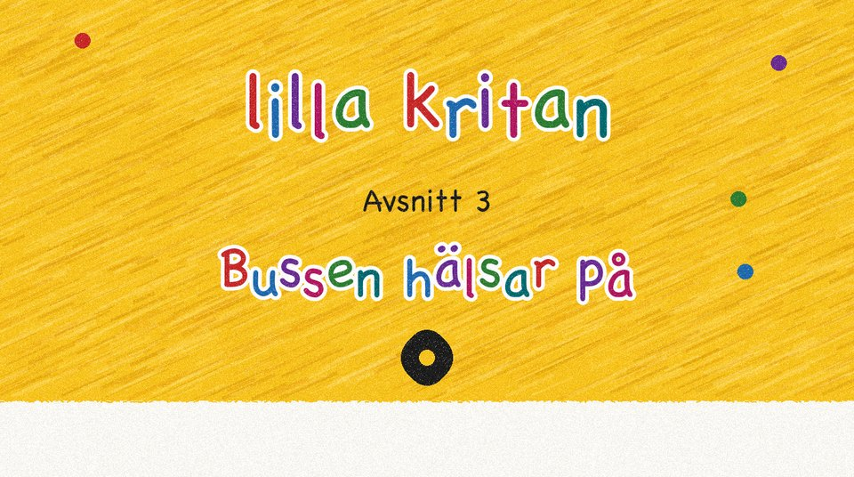
♪ Jingel (3–4 s): Rita, rita, ett, två, tre – lilla kritan! Kom och se! · (titeln syns, ingen röst)
Fast intro: logotypen lilla kritan ritas i många kritfärger under jingeln, sedan titeln. Gul vägg av vaxkritstreck med papperskorn, kritbokstäver med vit kant som kokar (boil) i filmen, prickar i kanterna och ett litet hjul.
Fast format · görs en gång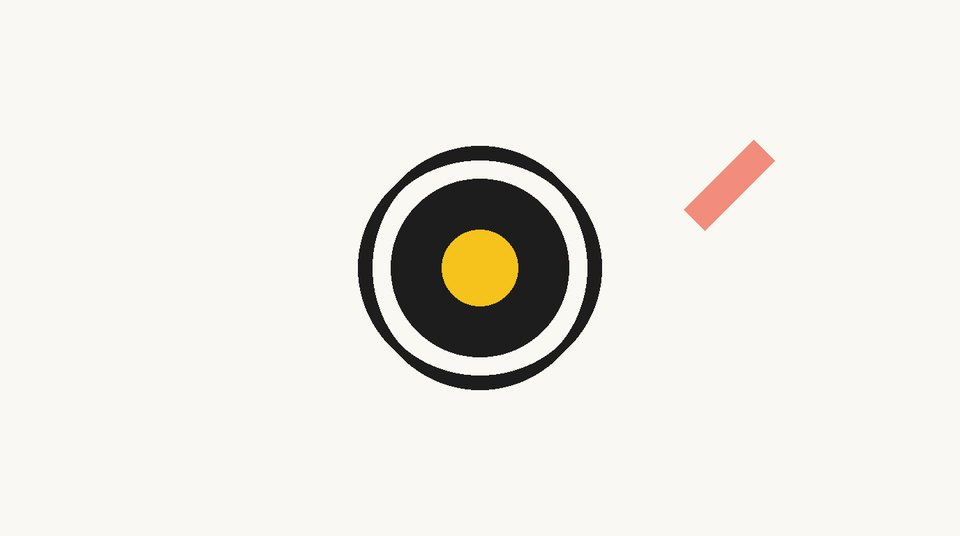
♪ Intro: Kritan ritar, runt, runt, runt, vad kan det vara? (paus 3 s) Ett hjul! Ett hjul som snurrar runt, nu åker vi i väg!
Kritan ritar en svart cirkel med en gul prick. Paus 3 s för barnet. Zoom in i hjulet, som blir bussens framhjul.
Kod-väg · 0 krediter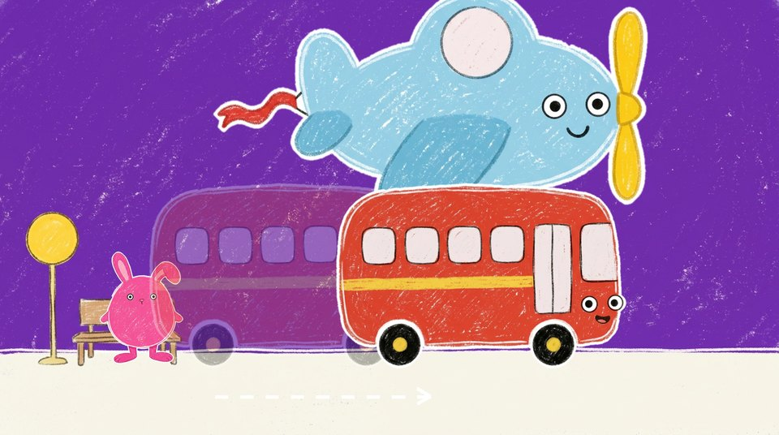
BUSSEN: Tuta-tut! Idag kör jag en tur och hälsar på mina kompisar.
Kamera 1, helbild. Bussen rullar in från vänster och stannar, hjulen slutar snurra. Kaninen vid bänken. Flygplanet glider förbi långt bort.
Kod-väg · 0 krediter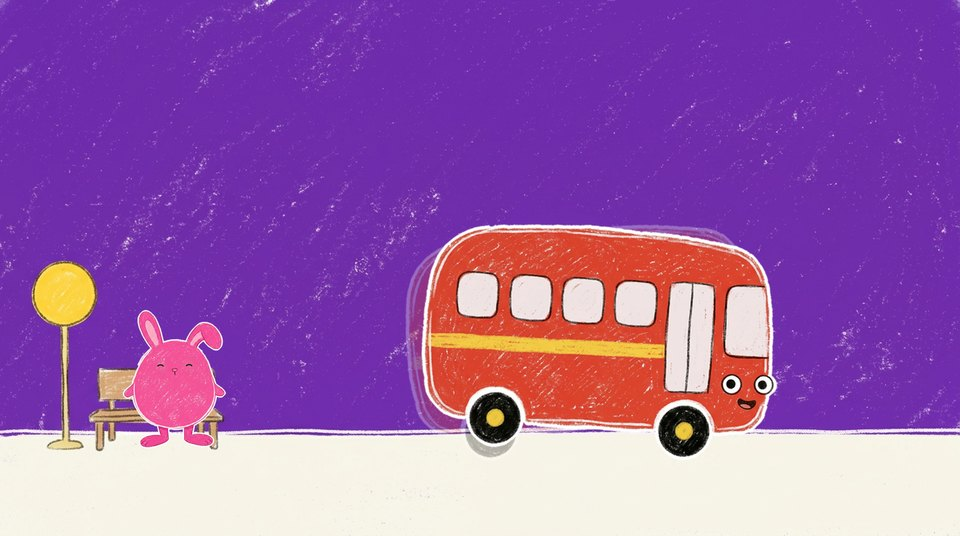
♪ Vers 1 + refräng: Här kommer bussen, rund och röd, tuta-tut, hon säger hej! …
Bussen gungar i takt och tutar på varje ”tut-tut”. Kaninen ler (^ ^).
Kod-väg · 0 krediter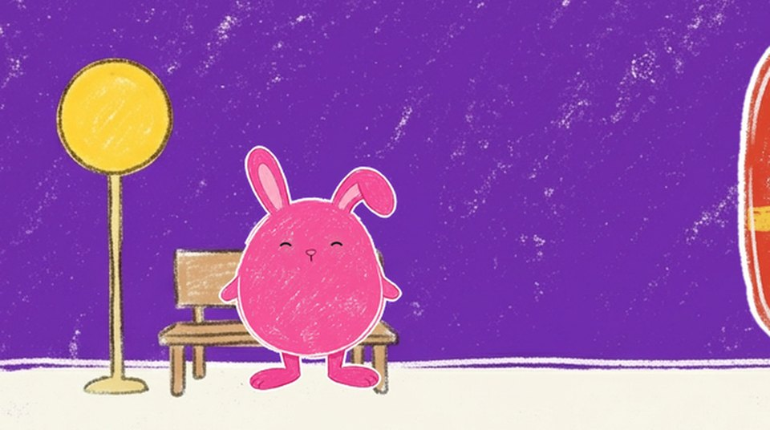
KANINEN: Bussen! Där är du ju! Ett, två, tre – hopp!
Kamera 2, närbild på kaninen, glad. Hoppar ner från bänken (duns).
Kod-väg · 0 krediter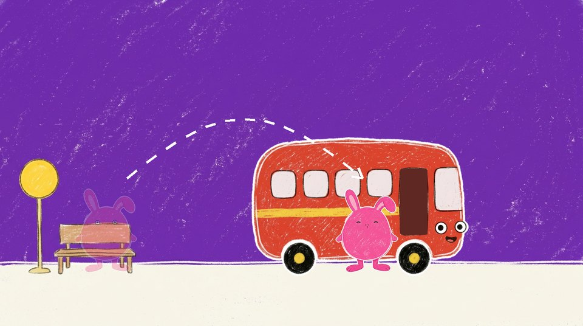
BUSSEN: Hej, kaninen! Vill du åka med? · KANINEN: Ja! Ett, två, tre – hopp!
Kamera 1. Dörren öppnas (pschhh). Kaninen hoppar i en båge in genom dörren (duns).
Kod-väg · 0 krediter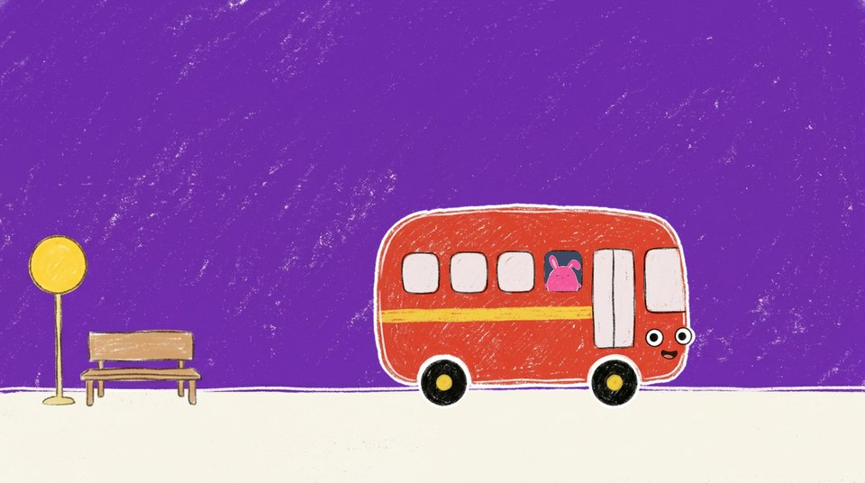
♪ Vers 2 + refräng: Ett, två, tre – hopp-hopp! In i bussen hoppar hon …
Kaninen tittar ut genom fönstret närmast dörren och studsar på varje ”hopp-hopp”.
Kod-väg · 0 krediter · fönsterpose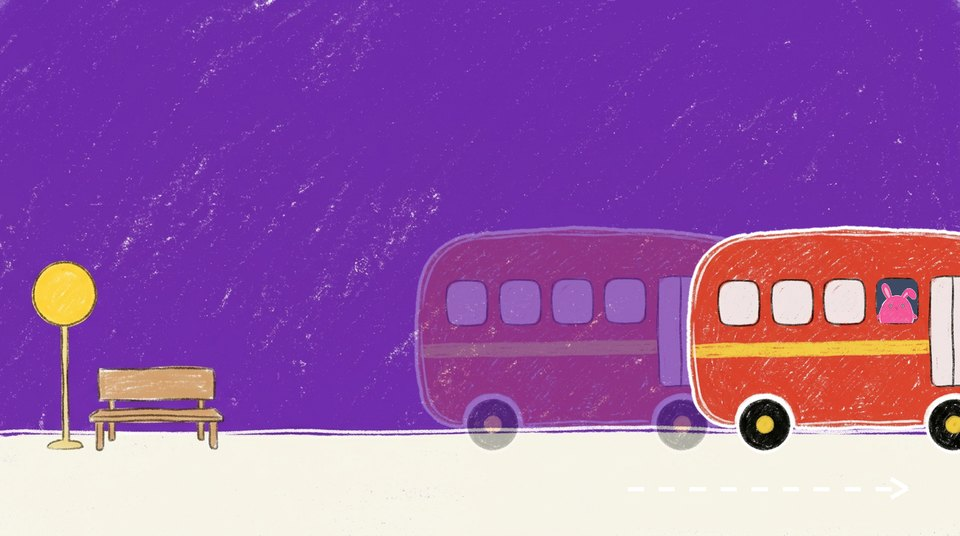
BUSSEN: Tuta-tut! Alla ombord! · KANINEN: Vart ska vi nu? · BUSSEN: Till bondgården!
Dörren stängs (pschhh). Bussen rullar ut åt höger.
Kod-väg · 0 krediter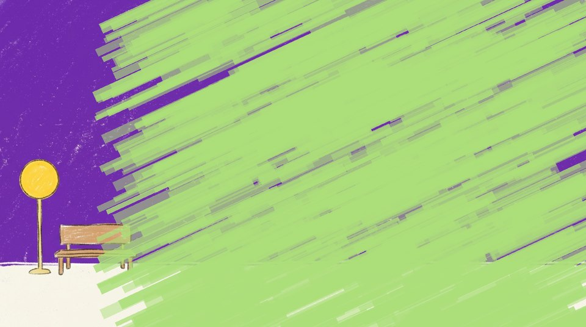
Grönt kritsvep (vägens väggfärg).
Fast format · görs en gång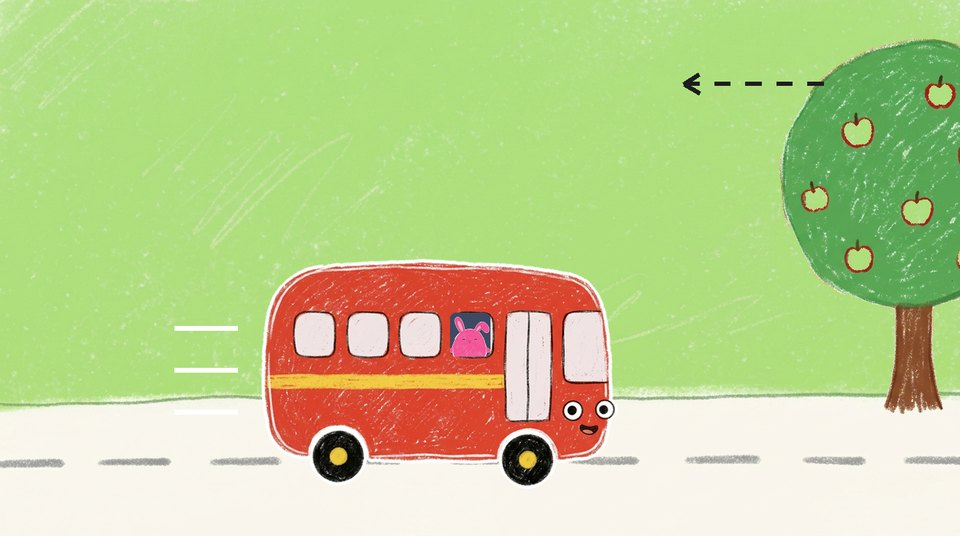
♪ Körvers: Brum-brum, vi kör på vägen, förbi ett äppelträd.
Bussen står still i mitten, gungar lite och hjulen snurrar. Vägen glider åt vänster, och ett äppelträd glider in från höger och förbi. Trädet klipps ur Äppelträdets bakgrund.
Kod-väg · 0 krediter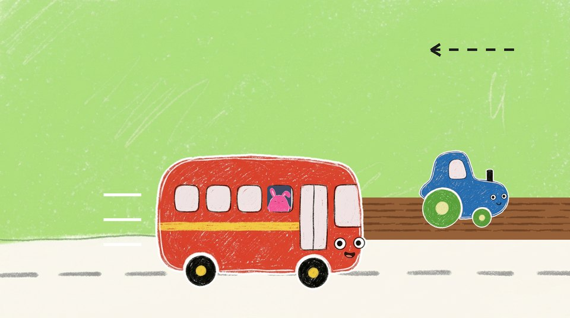
♪ Körvers: Traktorn plöjer, tuff-tuff-tuff, och bussen tutar med!
En åker glider in med traktorn som plöjer. Traktorn tutar och bussen tutar tillbaka. Åkerremsan ritas i kod.
Kod-väg · 0 krediter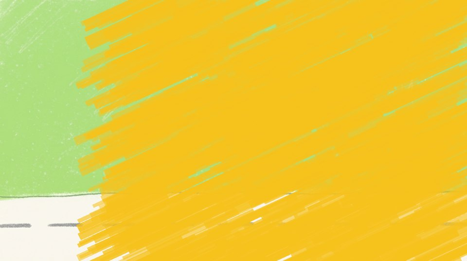
Gult kritsvep (Bondgårdens väggfärg) till Bondgården.
Fast format · görs en gång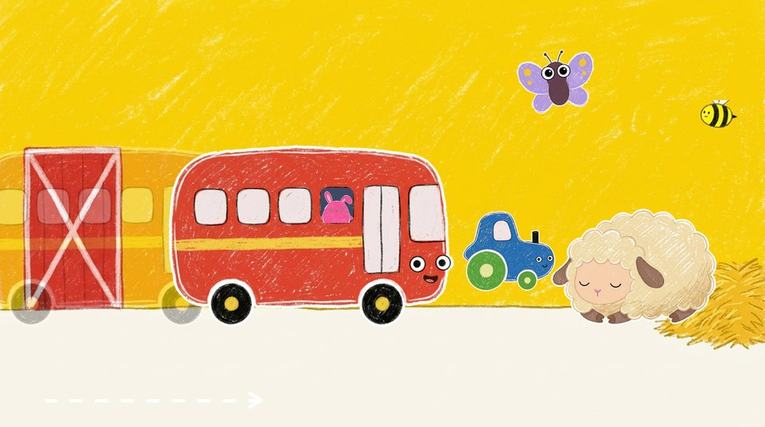
BUSSEN: Tuta-tut! Hej, lammet! · (tyst … snark … pip)
Kamera 3, helbild. Bussen rullar in och stannar. Traktorn plöjer längst bak. Lammet sover stående vid höet och gungar sakta.
Kod-väg · 0 krediter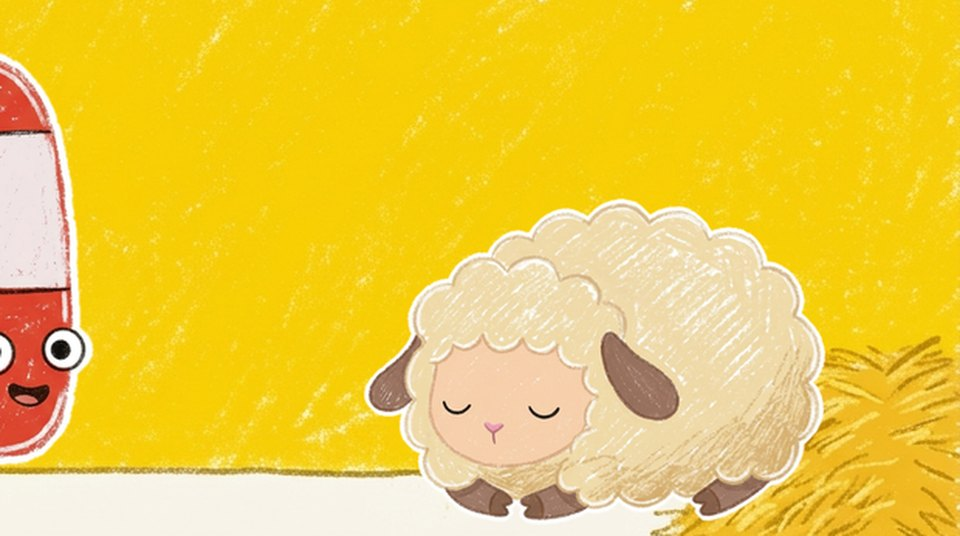
KANINEN: Shh … lammet sover! · BUSSEN: Oj. Han hör inte min tuta.
Kamera 4, närbild på lammet med stängda ögon.
Kod-väg · 0 krediter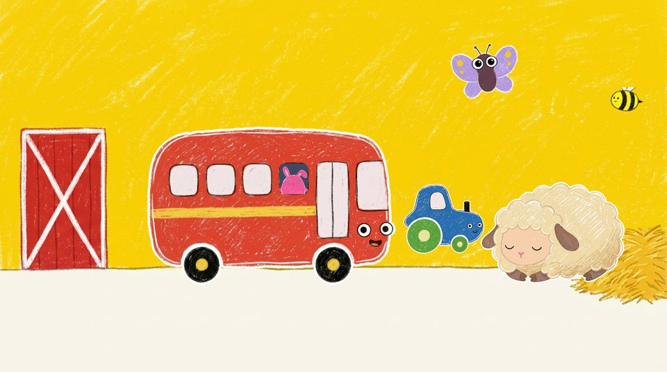
KANINEN: Vi sjunger för honom!
Kamera 3. Kaninen tittar på lammet.
Kod-väg · 0 krediter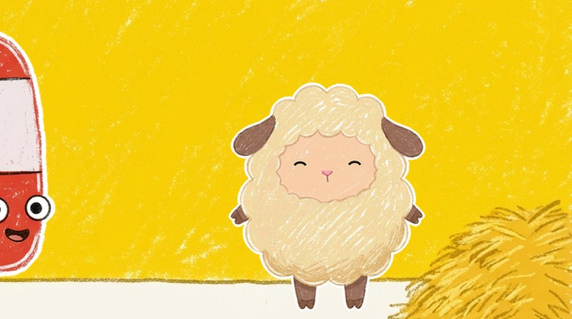
♪ Vers 3: Lammet sover vid höet … Hur säger lammet? Kan du det? (paus 3 s) Bä-bä! … god morgon, lilla lamm! · LAMMET: Bä-ä-ä, vad mysigt!
Kamera 4. Lammet öppnar ett öga på ”ett öga tittar fram” och båda på ”god morgon, lilla lamm”, och ler.
Kod-väg · 0 krediter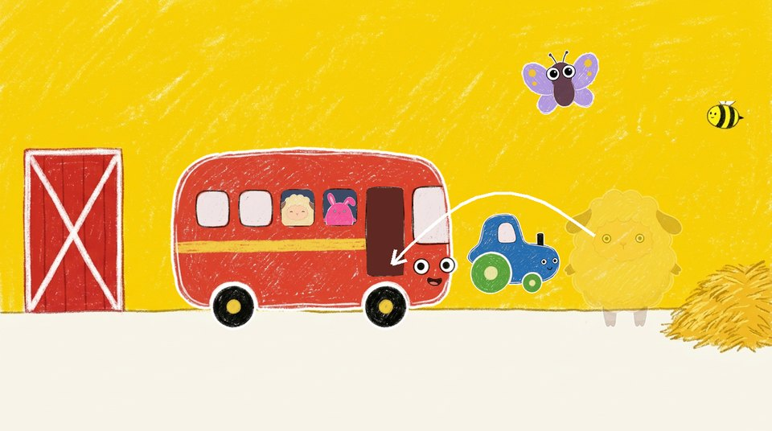
BUSSEN: Tuta-tut! Alla ombord!
Kamera 3. Dörren öppnas, lammet kliver sömnigt in och tittar ut bredvid kaninen. Dörren stängs.
Kod-väg · 0 krediter · fönsterpose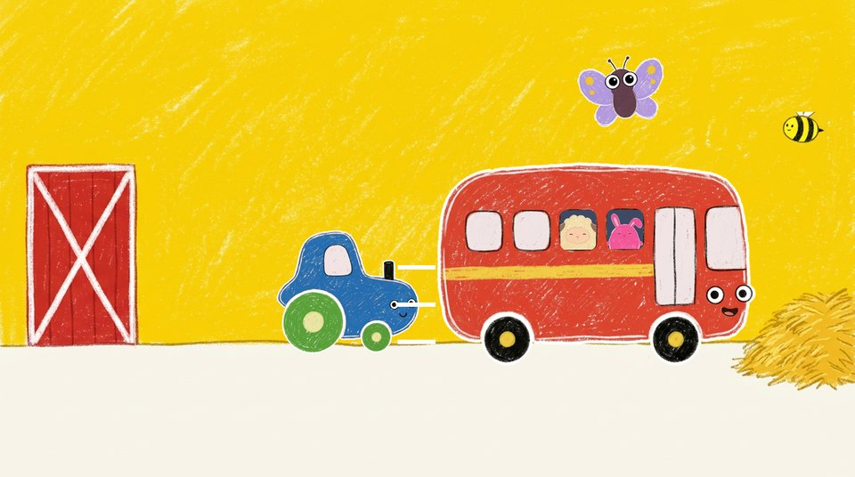
♪ Vers 4: Alla sitter i bussen nu, vi kör ett varv på gården …
Kamera 5, långsam panorering. Bussen kör ett varv runt gården, kaninen och lammet vinkar, traktorn tutar (tuff-tuff).
Kod-väg · 0 krediter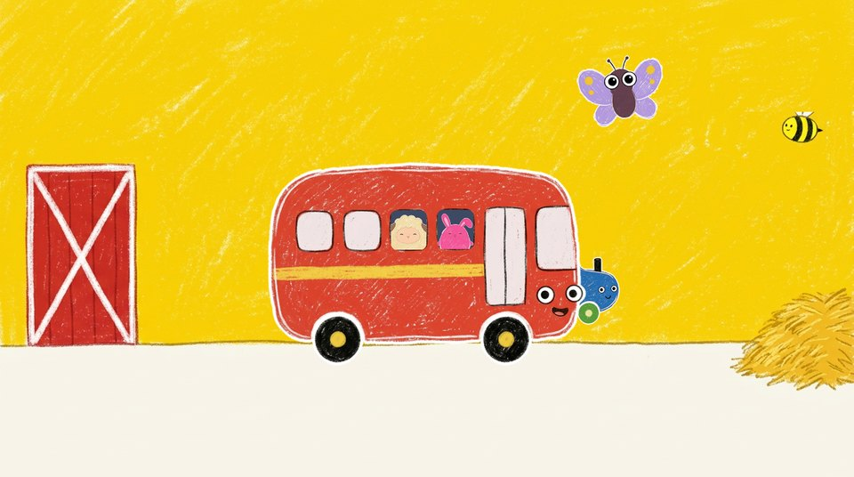
BUSSEN: Tuta-tut! · KANINEN och LAMMET: Tuta-tut!
Kamera 6, helbild. Bussen stannar mitt på bilden.
Kod-väg · 0 krediter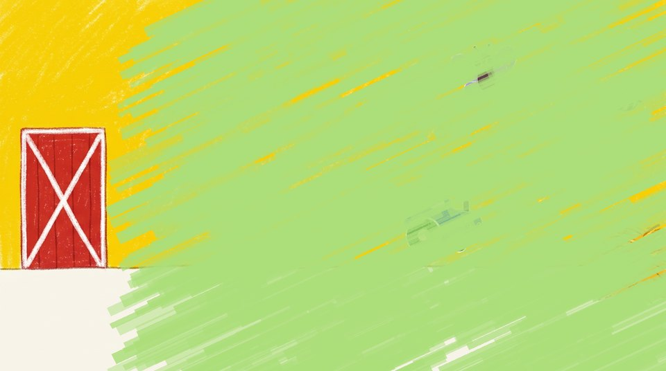
BUSSEN: Nu kör vi och köper glass!
Grönt kritsvep ut på vägen igen.
Fast format · görs en gång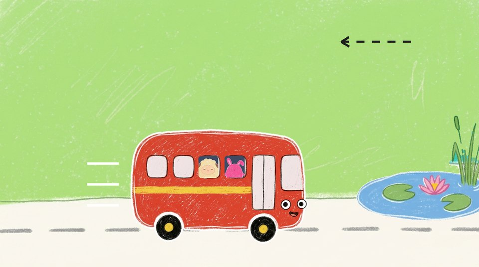
(musik: refrängen spelas igen i redigeringen, sången har ingen körvers 2)
Alla ombord: kaninen och lammet i fönstren. En damm med en näckros glider förbi (klippt ur Dammens bakgrund).
Kod-väg · 0 krediter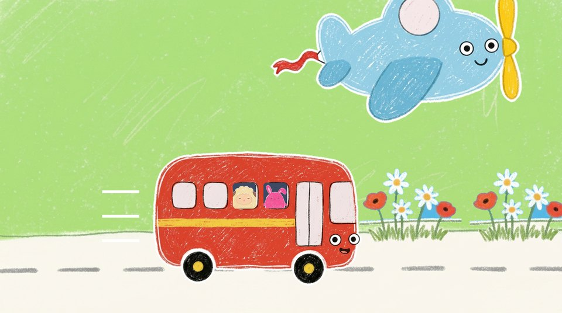
(musik: refrängen spelas igen i redigeringen, sången har ingen körvers 2)
Blommor från ängen glider förbi (klippta ur Ängens bakgrund), och flygplanet flyger över bussen.
Kod-väg · 0 krediter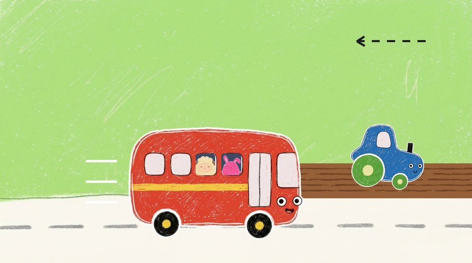
(musik: refrängen spelas igen i redigeringen, sången har ingen körvers 2)
Traktorn står på åkern och gungar som en vinkning när bussen kör förbi.
Kod-väg · 0 krediter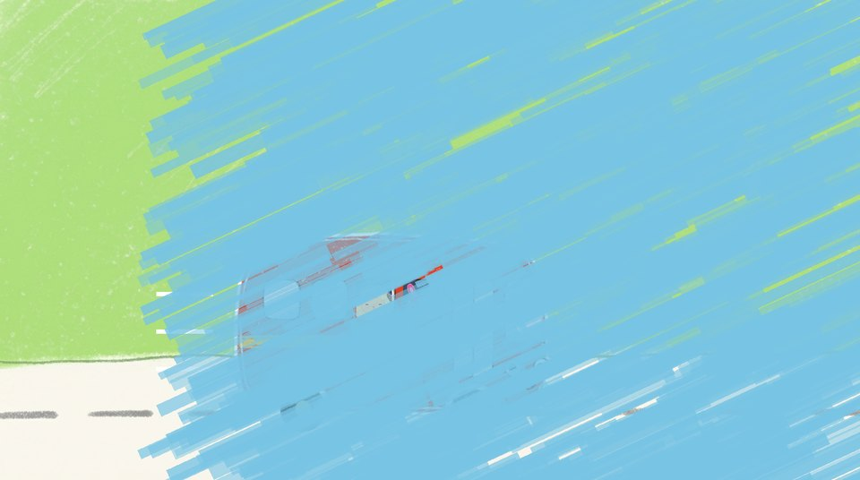
Ljusblått kritsvep (Glasskioskens väggfärg) till sista stoppet.
Fast format · görs en gång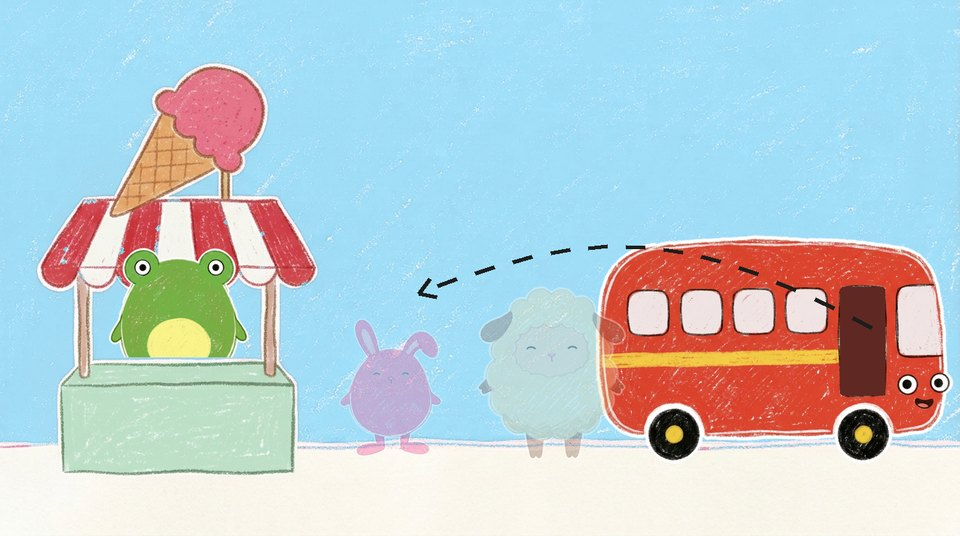
BUSSEN: Sista stoppet! Alla går av! · KANINEN: Glass!
Kamera 8, helbild. Bussen rullar in och stannar till höger. Dörren öppnas (pschhh), och kaninen och lammet hoppar av och går fram till kiosken.
Kod-väg · 0 krediter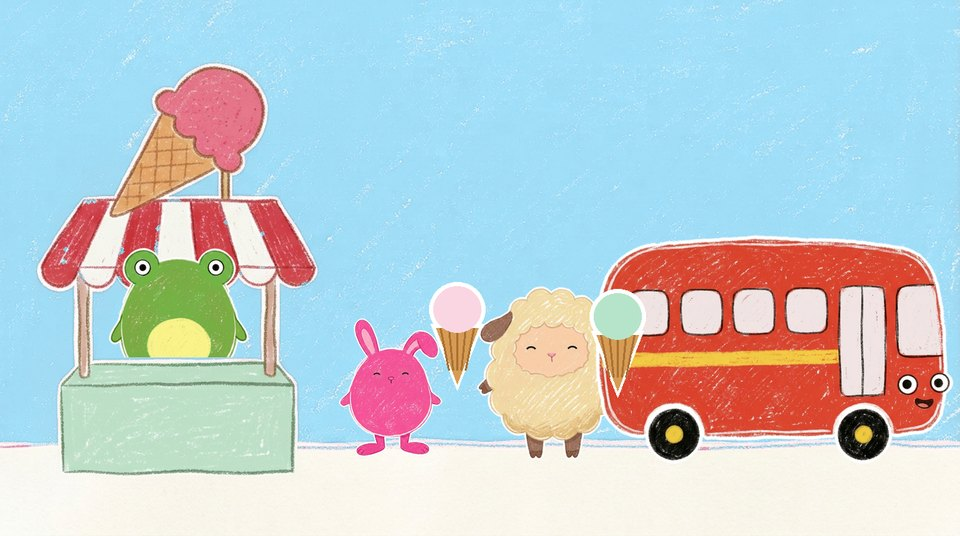
♪ Glassvers: Sista stopp, där står en kiosk, och grodan säger: glass! En till dig och en till mig, och en till lammet – mums! (grodan sjunger: en till kaninen, en till sig själv) · KANINEN och LAMMET: Mmm!
Grodan står bakom disken och räcker fram glassen. Kaninen får en rosa glass och lammet en mintgrön. Bussen får ingen glass: den står glad bredvid och tutar.
Kod-väg · 0 krediter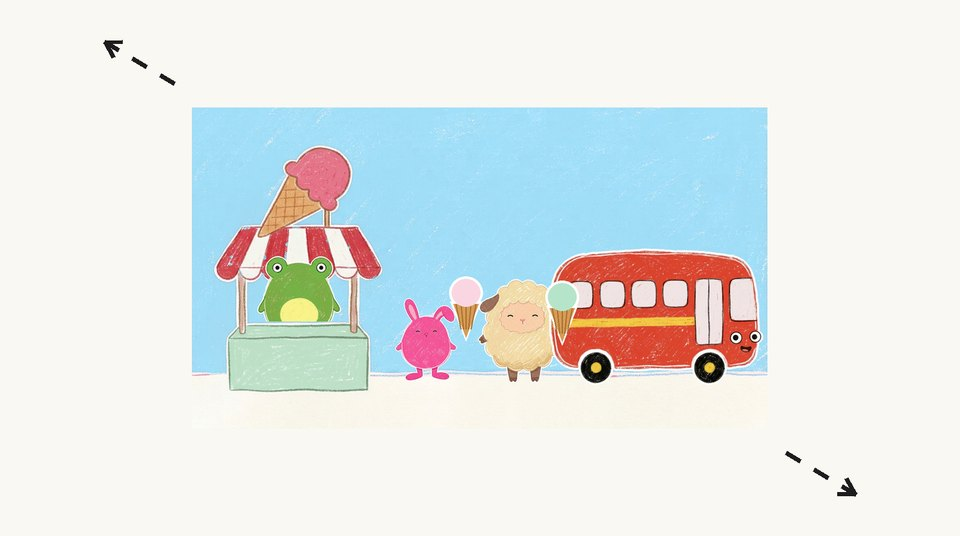
♪ Sista refrängen: Tuta-tut, tuta-tut, vi har åkt en lång, lång tur! Lammet vaknade, alla fick glass, tuta-tut och hej, hej då!
Zoom ut till papperet.
Kod-väg · 0 krediter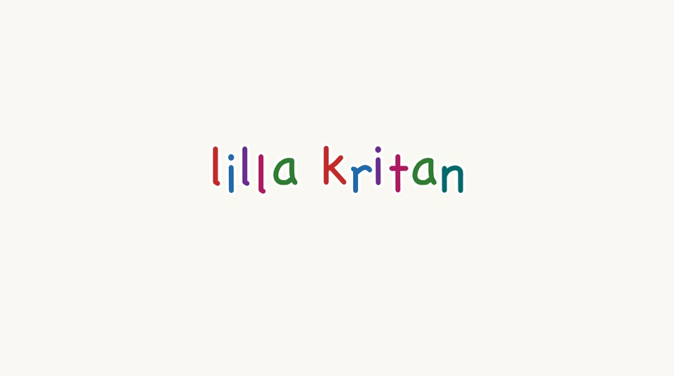
♪ Outrojingeln (ingen röst)
Fast outro.
Fast format · görs en gångbildlista.md behöver alltså inga nya bilder.sang.m4a (2:37), plus 8 s jingel före. Radernas tider står i rader.txt. Sången har ingen körvers 2, så den andra körsträckan (16a–16e, 15 s) får refrängens musik en gång till i redigeringen.wan3-0 på 480p, 100 krediter för 5 s med bara referenser, eller 200 för 5 s med en pinnfigursguide. Fråga innan.assets/ få samma färg.~/.claude/skills/ai-video/.venv/bin/python -I bygg.py i den här mappen.